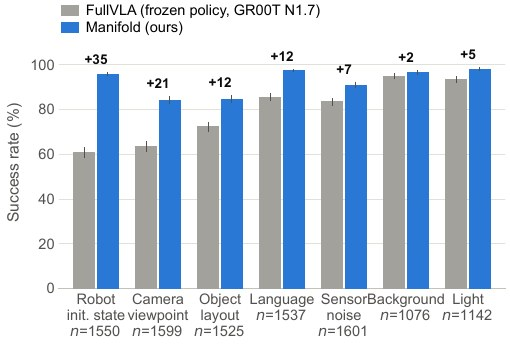

Abstract
A vision–language–action policy is asked to solve a whole task from an arbitrary starting state, and most of what it must do is transport — moving the arm across free space to somewhere it can act. Manifold separates that global transport from the local, contact-rich interaction, and learns only where to hand control back. From the same demonstrations the policy was trained on, we fit a per-object handoff manifold: the set of states from which that frozen policy reliably finishes the job. A collision-aware planner carries the arm to a pose selected on this manifold, and the unmodified policy takes over for the contact.
Nothing about the policy changes — no fine-tuning, no adapters, no gradients. On clean LIBERO the layer is cost-free. Under the 10,030 perturbed tasks of LIBERO-Plus it adds +14.3 points overall and +35.1 where the robot’s initial state is perturbed; it quadruples collision-free success where an obstacle blocks the path; and it makes a chain follow the instructed order where the policy alone never does (0 → 81.7 % under a reversed instruction).

Method
One sub-task at a time, control is the sequence transport → handoff → frozen VLA.
Phase 0 — Handoff selection
Fit an action-aware handoff manifold per object from the policy’s own 50 demonstrations per task — the states from which it reliably continues. Candidates are sampled around the target, scored against the manifold and against geometric costs, and filtered by the planner. This is the only learned component.
Phase 1 — Collision-aware transport
A geometric planner moves the arm to the selected pose, avoiding obstacles and respecting kinematic limits. On a place sub-task the carried object is attached to the collision model. If no plan exists, the policy simply continues — the layer never blocks it.
Phase 2 — Frozen-VLA interaction
Control passes to the vision–language–action policy, which performs the short-horizon contact until the sub-task’s goal predicate holds. The checkpoint is never modified, and the same layer runs over GR00T N1.7, π0, π0.5 and OpenVLA-OFT.

The layer is free on clean benchmarks
On an unperturbed tabletop the policy would have reached the handoff state on its own, so there is nothing for the layer to win. What matters is that it costs nothing: no suite moves by more than four episodes out of 200, and on the longest chains the layer is ahead.
| Method | Spatial | Object | Goal | LIBERO-10 | Avg. |
|---|---|---|---|---|---|
| OpenVLA | 84.7 | 88.4 | 79.2 | 53.7 | 76.5 |
| π0 | 96.8 | 98.8 | 95.8 | 85.2 | 94.2 |
| OpenVLA-OFT | 97.6 | 98.4 | 97.9 | 94.5 | 97.1 |
| π0.5 | 98.8 | 98.2 | 98.0 | 92.4 | 96.9 |
| GR00T N1.7 (NVIDIA) | 97.5 | 98.5 | 97.5 | 94.5 | 97.0 |
| GR00T N1.7 FullVLA (ours) | 98.0 | 97.5 | 98.5 | 87.5 | 95.4 |
| GR00T N1.7 + Manifold (ours) | 96.0 | 98.0 | 98.0 | 91.5 | 95.9 |
Success rate (%) per suite, 200 episodes each. The last two rows are ours on one harness and are paired episode by episode; the rows above are published numbers on other harnesses.
Where it pays: 10,030 perturbed tasks
The gain tracks whether the perturbation attacks the path to the object. Where the planner still reads live geometry — a moved robot base, a shifted camera — the layer keeps almost everything. Where geometry is untouched and only appearance changes, both arms are already near ceiling and there is little to win.
| Method | Orig. | Robot Init | Camera | Layout | Language | Noise | Background | Light | Total |
|---|---|---|---|---|---|---|---|---|---|
| OpenVLA | 76.5 | 4.1 | 1.1 | 31.6 | 26.8 | 19.3 | 25.3 | 4.4 | — |
| WorldVLA | 79.1 | 30.2 | 0.3 | 39.4 | 44.2 | 12.2 | 14.5 | 29.4 | — |
| Nora | 87.9 | 41.1 | 4.0 | 63.9 | 67.0 | 17.6 | 50.5 | 31.0 | — |
| π0 | 94.2 | 6.6 | 15.8 | 70.4 | 61.0 | 79.4 | 78.5 | 79.6 | — |
| UniVLA | 95.2 | 50.3 | 4.3 | 34.3 | 71.8 | 25.3 | 80.0 | 59.1 | — |
| OpenVLA-OFT | 97.1 | 37.2 | 59.7 | 77.1 | 81.5 | 76.7 | 92.4 | 85.8 | 69.6 |
| RIPT-VLA | 97.5 | 36.7 | 58.3 | 76.5 | 80.1 | 73.8 | 90.4 | 87.9 | — |
| GR00T N1.7 FullVLA (ours) | 95.4 | 60.8 | 63.6 | 72.5 | 85.8 | 83.6 | 95.0 | 93.6 | 77.9 |
| GR00T N1.7 + Manifold (ours) | 96.0 | 95.9 | 84.4 | 84.7 | 97.7 | 91.0 | 96.7 | 98.3 | 92.2 |
| gain | — | +35.1 | +20.8 | +12.3 | +11.9 | +7.4 | +1.8 | +4.7 | +14.3 |
| π0.5 + Manifold (ours)† | 97.4 | 96.7 | 82.9 | 88.5 | 95.4 | 90.5 | 95.4 | 96.6 | 91.9 |
| OpenVLA-OFT + Manifold (ours)† | 96.5 | 90.6 | 77.5 | 81.4 | 91.7 | 79.6 | 93.3 | 87.4 | 85.5 |
Total pools all 10,030 variants, so each dimension enters weighted by how many variants it contributes; it is not the mean of the seven columns. The published rows carry no total because the benchmark’s Table 1 reports none. The gain row is paired per task against the policy-alone arm of the same backbone, which is why it exists only for GR00T N1.7. Rows marked † are layer-only campaigns with no policy-alone arm of ours, so they are levels and nothing may be differenced against them.

Obstacles: the transport is where collisions do not happen
SafeLIBERO puts an obstacle between the arm and the target and scores whether the arm avoids it (CAR) as well as whether the task succeeds (TSR). Of 165 colliding episodes, exactly one has its first contact inside a planner phase.
| Policy | Spatial | Object | Goal | Long | Avg. | |||||
|---|---|---|---|---|---|---|---|---|---|---|
| CAR | TSR | CAR | TSR | CAR | TSR | CAR | TSR | CAR | TSR | |
| OpenVLA-OFT | 8.3 | 36.5 | 11.5 | 28.8 | 19.5 | 24.3 | 6.0 | 15.3 | 5.7 | 26.2 |
| π0.5 | 14.0 | 59.3 | 18.0 | 57.5 | 20.0 | 60.0 | 16.5 | 54.3 | 17.1 | 57.8 |
| π0.5 + AEGIS | 68.0 | 68.5 | 71.3 | 72.5 | 76.5 | 82.8 | 59.8 | 46.3 | 68.9 | 67.5 |
| GR00T FullVLA (ours) | 12.8 | 45.8 | 21.8 | 27.0 | 0.8 | 21.8 | 6.0 | 12.3 | 10.3 | 26.7 |
| GR00T + Manifold (ours) | 32.5 | 60.3 | 78.8 | 84.8 | 17.5 | 32.8 | 27.5 | 42.8 | 38.6 | 55.8 |
| π0.5 (ours) | 13.5 | 57.5 | 19.5 | 55.5 | 18.3 | 61.8 | 13.0 | 57.3 | 16.1 | 58.0 |
| π0.5 + Manifold (ours) | 18.5 | 59.0 | 58.5 | 78.3 | 26.3 | 67.8 | 36.5 | 78.3 | 35.0 | 70.9 |
Collision-avoidance rate and task success rate (%), both levels pooled, 400 episodes per cell. On GR00T Object the layer takes CAR from 21.8 to 78.8. AEGIS leads on average CAR; our π0.5 arm leads on average task success. The limitation is honest: where the handoff pose sits close to the object, the planner has little room and the layer degenerates toward the baseline.
Long chains: the order the instruction asked for
LiLo-VLA’s Long++ asks for the same two skills in the opposite order, and scores success only if they are executed in the order instructed. The zero is not a rounding of something small: the policy alone reaches the goal in 60% of reversed episodes and satisfies the instructed order in none of them. It does both sub-tasks backwards.
| Method | Long++ original | Long++ reversed | ||
|---|---|---|---|---|
| SR | AP | SR | AP | |
| Reported by the benchmark authors (their harness) | ||||
| π0.5 | 83 | 93 | 0 | 0 |
| OpenVLA-OFT | 7 | 11 | 0 | 0 |
| LiLo-VLA (full, retrained) | 78 | 88 | 85 | 89 |
| Ours (same 10 initial states per task, paired, frozen policies) | ||||
| GR00T N1.7 FullVLA | 46.7 | 54.2 | 0.0 | 25.8 |
| GR00T N1.7 + Manifold | 86.7 | 91.7 | 63.3 | 73.3 |
| π0.5 FullVLA | 71.7 | 80.0 | 0.0 | 30.0 |
| π0.5 + Manifold | 88.3 | 95.0 | 81.7 | 82.5 |
| OpenVLA-OFT + Manifold | 80.0 | 82.5 | 65.0 | 73.3 |
SR is order-aware throughout; AP is average progress. LiLo-VLA reaches its reversed-order numbers by retraining. We reach ours with every policy frozen.
Real-Robot Rollouts
A UR arm, pick-and-place, with the frozen checkpoint and the handoff manifolds carried over from simulation unchanged and the object pose supplied by an off-the-shelf segmentation and depth pipeline in place of simulator state. Two perturbations are crossed: the worktop covering is replaced (geometry untouched, only pixels change) and distractor objects are scattered around the target (geometry changes). All videos play at 2×.
Real-Robot Results
| Arm | Clean n=20 | Clutter n=10 | Visual shift n=10 | Both n=10 | All n=50 |
|---|---|---|---|---|---|
| FullVLA | 15 (75.0) | 8 (80.0) | 5 (50.0) | 4 (40.0) | 32 (64.0) |
| + Manifold | 18 (90.0) | 9 (90.0) | 8 (80.0) | 8 (80.0) | 43 (86.0) |
Successes and rate (%). The expectation registered before the run was the largest gain under clutter; the measurement says otherwise, and the miss is informative. Clutter changes geometry, which the planner reads live, so a policy that never sees the obstacle is not much harmed by it. The worktop changes nothing the planner reads and everything the policy sees, so it lands entirely on the arm with no other source of the target.
No single cell separates the arms — ten episodes a cell put all four at p ≥ 0.17 by Fisher’s exact test, and one episode is ten points. Pooled over the fifty episodes each arm ran, 43/50 against 32/50 is the only comparison here we would defend on its own.

BibTeX
@inproceedings{manifold2026,
title = {Manifold: Learned Handoff Manifolds for Frozen
Vision-Language-Action Policies under Perturbation},
author = {Anonymous Authors},
booktitle = {Under review},
year = {2026}
}